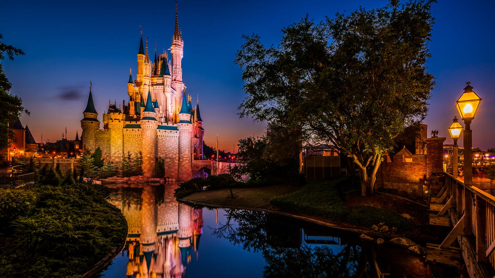
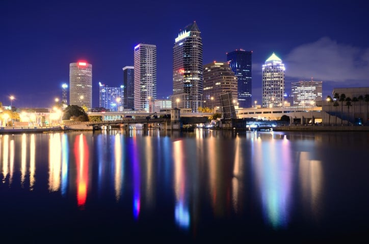

Florida
Florida has many great attractions all around the state. My favorites are Disney World, Miami, and Tampa Bay. Florida also has hundreds of beaches visitors can go to.
Disney World
Disney World is a great place to go for all ages. Disney has many great roller coasters for all ages and many great attractions all over the parks. Visitors can choose from four parks including Magic Kingdom, EPCOT, Hollywood Studios, and Animal Kingdom. Magic Kingdom is the world's most famous theme park. EPCOT is known for its huge ball called Spaceship Earth where visitors can explore global cultures, space, and the seas. Hollywood Studios' main attractions are the Tower of Terror and the Rock 'n' Roller Coaster. Lastly, Animal Kingdom is based on plant and animal life with many live animals and great attractions such as Expedition Everest.
Miami

Miami is located on the very southeast of Florida. Miami is the largest city in South Florida and is the second largest in all of Florida. Visitors in Miami can go to beaches nearby, fish, Everglades, and many other outdoor activities because of the great weather. The professional sports teams in Miami are the Dolphins, Heat, Panthers, and Marlins.
Tampa Bay
Tampa Bay is connected to the Gulf of Mexico and has great weather for vacations. Tampa Bay has a population of 4 million people. An interesting part about Tampa is that when there, visitors can see many large manatees swimming by in the ocean. The professional sports teams in Tampa include the Buccaneers, Lightning, and the Rays. Right now, the Rays are the best team in the MLB. Tampa Bay also has a lot of great beaches for vacation.